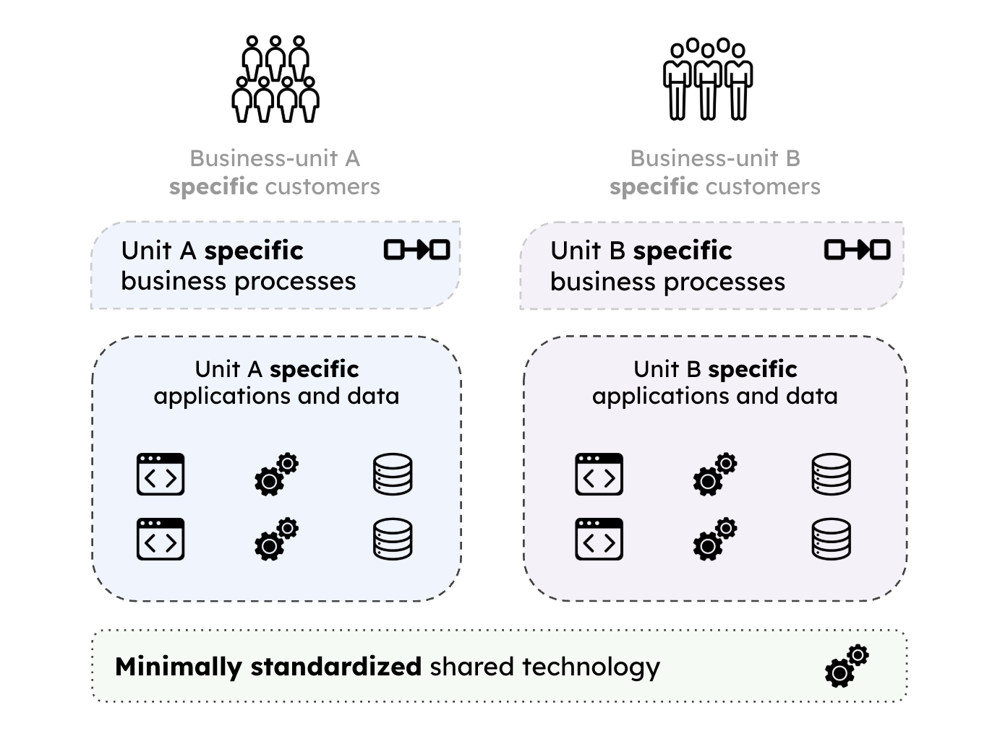
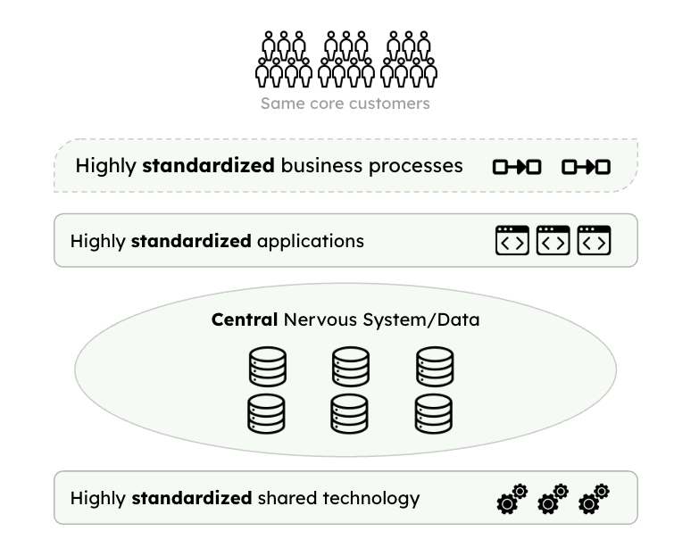
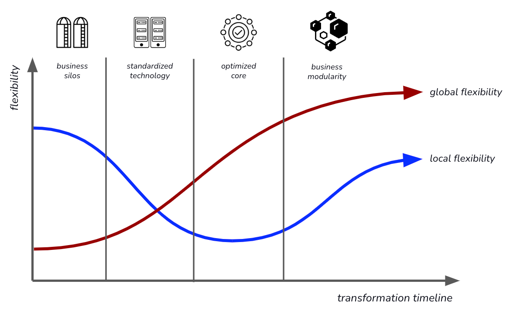

IT Architecture and Business Strategy
IN THIS SECTION, YOU WILL: Learn about the dynamic alignment between business strategy and IT, and how tailored IT solutions driving organizational agility, innovation, and competitive advantage.
KEY POINTS:
- Business strategy and IT must align dynamically, with IT enabling execution through innovation, efficiency, and data-driven decisions.
- Enterprise Architecture frameworks emphasize operating models, flexibility (global vs. local), and stages of IT alignment from silos to modularity.
- Companies succeed by excelling in one strategic path—operational excellence, product leadership, or customer intimacy—supported by tailored IT architecture.
There are many definitions of business strategy, but I found the view of Roger L. Martin, a prominent business strategist, most practical and inspiring. Maring views strategy as integrated choices designed to achieve a specific objective. He emphasizes that strategy is not merely a plan but a framework or theory for making decisions that guide an organization toward success.
In his work, Martin introduces the “Strategy Choice Cascade,” which outlines five critical questions that form the foundation of a robust strategy:
- What is our winning aspiration?
- Where will we play?
- How will we win?
- What capabilities must be in place to win?
- What management systems are required to ensure the capabilities are in place?
This cascade encourages organizations to make deliberate choices that align with their overarching goals, ensuring that each decision reinforces the others to create a cohesive strategy.
Roger L. Martin emphasizes the importance of articulating the underlying logic of a strategy. He suggests that strategists clearly define the cause-and-effect relationships they believe will lead to success. This involves specifying the assumptions and conditions that must hold true for the strategy to be effective. By laying out this logic, organizations can better understand their strategic choices and identify potential areas of risk or uncertainty. Martin advises that after establishing this logical framework, organizations should implement the strategy, monitor its progress, and make adjustments as necessary. This approach acknowledges the inherent uncertainties in strategic decision-making and promotes adaptability in changing circumstances.
Business strategy and IT are deeply intertwined, with business processes and supporting systems working together to achieve organizational goals. Strategy sets the direction, identifying goals, priorities, and specific needs, while IT enables execution by streamlining processes, driving innovation, and providing data-driven insights for decision-making.
This relationship is dynamic, where business needs shape IT solutions, and technological advancements influence strategic opportunities. New technology also requires changing how it is managed, as traditional management approaches may not suffice for emerging technologies’ unique demands. Effective alignment requires integrating processes with systems, adapting workflows to leverage technology, and fostering collaboration between business leaders and IT teams. As both evolve, continuous realignment ensures organizations remain agile and competitive, maximizing the mutual value of business and IT.
In business strategy and IT architecture, I often draw inspiration from three key sources:
- Enterprise Architecture as Strategy: Creating a Foundation for Business Execution by Jeanne W. Ross, Peter Weill, and David C. Robertson.
- The Discipline of Market Leaders by Michael Treacy and Fred Wiersema,
- The Discipline of Market Leaders by Michael Treacy and Fred Wiersema.
I use five key concepts from these works that shape my understanding of the relationship between business strategy and IT architecture.
Business Operating Models define how an organization structures its processes and systems to deliver value. These models include Diversification, where business units operate autonomously to address distinct markets; Coordination, where units remain independent but share data and resources to enhance collaboration; Replication, where units function independently while adhering to standardized systems and processes; and Unification, where tightly connected units operate with consistent processes to emphasize efficiency and alignment.
Global vs. Local Business Flexibility highlights the balance between enterprise-wide adaptability and the unique responsiveness of individual units. Global flexibility focuses on an organization’s ability to navigate overarching changes and opportunities, while local flexibility enables departments or regions to address specific needs and challenges.
Stages of IT and Strategy Alignment outline the maturity levels in linking IT and strategy, progressing from fragmented systems to strategic integration. These stages include business silos, characterized by minimal integration; standardized technology, where common platforms exist despite fragmented processes; optimized core, with standardized and integrated processes aligned to the operating model; and business modularity, enabling agility and innovation through modular, reusable components.
Outsourcing Strategies explore approaches to leveraging external providers, shaped by business goals, operational needs, and desired control levels. These include strategic outsourcing for long-term partnerships, transactional outsourcing for specific, task-oriented services, and co-sourcing for collaborative arrangements that blend internal and external expertise.
Achieving Market Leadership describes three strategic paths to competitive advantage: operational excellence through efficiency and reliability, product leadership by driving innovation, and customer intimacy by fostering deep relationships and tailored experiences.
These concepts collectively provide a framework for understanding how IT architecture supports and enables strategic business objectives.
Four Types of Business Operating Models
The Operating Model is a core concept in Enterprise Architecture as Strategy, representing how an organization structures its business processes and systems to deliver value. It determines the degree of business process standardization (consistency) and integration (information sharing) across business units. The book introduces the concept of the Operating Model, which defines the necessary level of business process standardization and integration.
 Figure 1: Four types of operating models: diversification (low integration, low standardization), coordination (high integration, low standardization), replication (low integration, high standardization), and unification (high integration, high standardization).
Figure 1: Four types of operating models: diversification (low integration, low standardization), coordination (high integration, low standardization), replication (low integration, high standardization), and unification (high integration, high standardization).
There are four types of operating models (Figure 1):
- Diversification: Low integration, low standardization.
- Coordination: High integration, low standardization.
- Replication: Low integration, high standardization.
- Unification: High integration, high standardization.
Diversification Model
The Diversification Model features low integration and low standardization. Business units operate autonomously, catering to distinct markets or customer bases with little need to share data or processes.

This model is ideal for conglomerates or holding companies with diverse business interests, such as General Electric or Berkshire Hathaway.
While it allows maximum flexibility and localized innovation, it misses synergies or cost savings opportunities. Business units operate independently and focus on autonomy to address unique markets or products (Figure 2). This approach is suited for organizations with diverse units serving distinct markets or customer bases, such as holding companies or conglomerates, where operational overlap is minimal.
 Figure 2: A high-level core diagram of the diversification operating model.
The model offers flexibility and innovation at the business unit level, enabling rapid adaptation to local or market-specific conditions. However, it comes with challenges, including missed opportunities for synergies, difficulties in achieving cost efficiencies, and potential complexities if integration becomes necessary.
Typical examples include conglomerates like GE or Berkshire Hathaway, which manage unrelated product lines, and universities, where departments function independently with unique funding, research, and teaching methodologies.
Coordination Model
The Coordination Model emphasizes high integration but low standardization. In this model, business units operate independently while sharing data and resources to ensure collaboration. The focus is on enabling interdependent parts of the organization to work together effectively. This model suits organizations with distinct business units that rely on shared data, such as healthcare systems where hospitals, clinics, and pharmacies collaborate through shared patient records.
While it fosters informed decision-making and innovation, it demands robust integration technologies and governance mechanisms. The Coordination Operating Model emphasizes independent business units working collaboratively by sharing data and resources to align activities (Figure 3). It prioritizes collaboration and ensures that different parts of the organization can access and exchange critical information efficiently. This model is well-suited for organizations with distinct but interdependent units, such as those serving the same customers or operating within complex value chains where each unit brings specialized expertise while depending on others for overall efficiency.
 Figure 3: A high-level core diagram of the coordination operating model.
Figure 3: A high-level core diagram of the coordination operating model.
The model supports informed decision-making by enabling access to shared data and fosters innovation at the business unit level without imposing rigid standardization. However, it also introduces challenges, such as managing the complexity of integrating diverse systems and processes and relying on advanced integration technologies and governance structures to maintain cohesion.
Examples of this model include healthcare systems (where hospitals, clinics, and pharmacies share patient records) and global supply chains (where inventory and demand data are exchanged across geographically distributed warehouses and suppliers).
Replication Model
The Replication Model combines low integration with high standardization. Business units function independently but follow standardized systems and processes. This model focuses on scalability and consistency, making it ideal for franchise-based organizations like McDonald’s or hotel chains. It allows for rapid scaling by replicating proven operations, though it can limit information sharing and create inefficiencies if local units require unique processes.

The Replication Operating Model combines operational autonomy with standardized processes, systems, or templates (Figure 4). It focuses on scalability and consistency, enabling organizations to replicate successful practices across multiple locations or units. This approach is ideal for decentralized organizations performing similar functions, such as franchises or businesses expanding operations into new geographies.
 Figure 4: A high-level core diagram of the replication operating model.
Figure 4: A high-level core diagram of the replication operating model.
This model facilitates rapid scaling while maintaining consistency by reusing proven processes and systems. It also allows for local customization to address specific market needs. However, the model can face challenges, such as limited information sharing between units, which may stifle innovation, and potential inefficiencies when standardized processes do not align with local requirements.
Common examples include franchise operations like McDonald’s or Starbucks, where each location operates independently within a framework of standardized procedures, and hotel chains, where individual locations follow uniform service and operational guidelines while maintaining some level of independence.
Unification Model
The Unification Model involves both high integration and high standardization. Here, business units are tightly connected and operate with consistent processes, emphasizing efficiency and a unified operating approach. This model suits organizations with centralized structures, such as retail chains or airlines, where a consistent customer experience and streamlined operations are critical. While the model enhances efficiency and consistency, it limits flexibility and requires substantial investment in standardized systems.

The Unification Operating Model is characterized by tightly integrated business units operating with standardized processes, emphasizing efficiency and a single operating approach across the enterprise (Figure 5). This model is best suited for organizations with centralized structures that require consistent customer experiences or aim to achieve economies of scale, particularly when delivering similar products or services across regions or customer segments.
 Figure 5: A high-level core diagram of the unification operating model.
Streamlined operations and standardized systems drive cost efficiencies and ensure consistency, improving quality and customer satisfaction. However, this approach can limit the flexibility of individual units and requires substantial investment in unified systems and processes to function effectively.
This model includes retail chains, where point-of-sale and inventory systems are standardized across all locations, and airlines, which rely on uniform booking, pricing, and operational processes across flights and locations to maintain consistency and efficiency.
Choosing an Operating Model
Each operating model offers a distinct balance of standardization and integration. The choice depends on the organization’s strategy, structure, and goals. Implementing the right operating model enables the organization to achieve operational efficiency and strategic alignment.
- Customer Needs: Do customers expect consistency or customization?
- Products/Services: Are products/services similar across units or vary widely?
- Data Requirements: Is real-time data sharing critical for business success?
- Cost vs. Agility: What’s the trade-off between standardization and flexibility?
Global vs. Local Business Flexibility
Global flexibility refers to the organization’s ability to adapt and respond to external changes, opportunities, and challenges that affect the entire enterprise or its overarching strategy. Local flexibility is the ability of individual business units, departments, or regions to respond quickly to their specific needs, opportunities, and challenges (Figure 6). Organizations can (a) focus on local flexibility at the cost of global flexibility,(b) focus on global flexibility at the cost of local flexibility, or (c) implement a standardized modular architecture that enables both high global and high local flexibility.
 Figure 6: Balancing local and global business flexibility.
Figure 6: Balancing local and global business flexibility.
Global Flexibility
Global flexibility refers to the organization’s ability to adapt and respond to external changes, opportunities, and challenges that affect the entire enterprise or its overarching strategy. An example is a global retailer implements a centralized inventory management system that provides real-time stock visibility across all regions. This system enables the company to adapt to global supply chain disruptions or launch new global initiatives efficiently.

Global flexibility is characterized by an enterprise-wide perspective that emphasizes solutions, processes, and systems designed to enable adaptability across the organization. This approach ensures that shared capabilities, such as common data standards and unified platforms, are structured to support rapid pivots or innovation.
Key enablers of global flexibility include standardized platforms and technology stacks, unified governance and decision-making frameworks, and enterprise-wide data models with robust integration. These elements create a cohesive foundation that simplifies large-scale transformations and global initiatives. By standardizing processes and technologies, organizations can reduce redundancy and complexity while improving scalability across different regions or business units.
However, achieving global flexibility is not without its challenges. It can sometimes feel rigid to individual business units or regions that require specialized solutions. Additionally, centralized control may slow down localized innovation, potentially hindering responsiveness to unique regional needs.
Local Flexibility
Local flexibility is the ability of individual business units, departments, or regions to respond quickly to their specific needs, opportunities, and challenges. An example is a multinational company operating in different countries that allows its regional offices to customize marketing campaigns based on local cultural preferences and consumer behavior.
Local flexibility is defined by a unit-specific perspective that prioritizes empowering local teams with tailored processes and solutions to address unique demands. This approach emphasizes decentralization and grants autonomy to individual business units or regions, fostering a focus on localized needs and innovation.
The foundation of local flexibility lies in modular systems that support customization, decentralized governance and decision-making frameworks, and well-defined APIs or interfaces that enable seamless integration between local and global systems. These elements allow organizations to adapt quickly to specific market demands or functional requirements.
This flexibility enhances customer satisfaction by addressing local or niche needs, encourages innovation through experimentation, and enables agility in smaller-scale contexts. However, it also presents challenges, such as the risk of fragmentation or duplication of efforts across the organization. Additionally, localized approaches can result in inefficiencies or integration difficulties when attempting to scale solutions at an enterprise-wide level.
Balancing Global and Local Flexibility
The real challenge lies in balancing global and local flexibility to maximize the organization’s effectiveness.
This balance depends on the operating model and the nature of the business.
-
When to Emphasize Global Flexibility: For processes or capabilities that drive enterprise-wide efficiency, compliance, and scalability (e.g., finance, supply chain, IT infrastructure). In industries where consistency and standardization are critical (e.g., pharmaceuticals, aviation).
-
When to Emphasize Local Flexibility: For customer-facing processes or where regional differentiation is a competitive advantage (e.g., marketing, sales, customer service). In highly decentralized industries or organizations with diverse product portfolios.
-
Enabling Both: implement a modular architecture where core systems are standardized, but local modules can be customized. Use a federated governance model that balances central oversight with regional autonomy. Build shared platforms with configurable features to address both global and local needs.
In summary, global flexibility provides consistency and scalability, allowing organizations to respond effectively to strategic changes across the enterprise. In contrast, local flexibility drives innovation and responsiveness by addressing regional or unit-specific requirements. Organizations that balance these two forms of flexibility develop resilient and adaptable architectures, enabling them to support strategic goals at every level.
Stages of Technology and IT Alignment
The Enterprise Architecture as Strategy book identifies four stages of Technology and IT Alignment, with increasing levels of strategic value:
- Business Silos: Independent systems and processes with minimal integration.
- Standardized Technology: Common technology platforms but still fragmented business processes.
- Optimized Core: Standardized and integrated processes aligned with the operating model.
- Business Modularity: Modular, reusable components enabling strategic agility and innovation.
In this context, the concepts of global flexibility and local flexibility refer to different ways organizations balance standardization and customization to achieve efficiency and adaptability (Figure 7).
 Figure 7: Balancing local and global business flexibility in different stages of Technology and IT Alignment.
Each stage reflects the level of standardization, integration, and strategic value IT systems provide. Progressing through these stages enables an organization to move from fragmented IT systems to a flexible, reusable architecture supporting strategic goals.
Stage 1: Business Silos
In the Business Silos stage, IT systems and business processes are developed independently within business units, resulting in fragmentation and inefficiencies. There is little to no integration or standardization, and each business unit prioritizes its goals and initiatives.

In this approach, systems are designed specifically to meet the needs of individual business units, with minimal consideration for enterprise-wide goals. Data is often stored in silos, limiting the ability to share information across the organization. IT functions primarily as a support role, addressing local requirements rather than serving as a strategic enabler.
This localized focus presents several challenges, including significant duplication of processes and systems, a lack of visibility and consistency across the organization, and difficulties in scaling or responding effectively to enterprise-wide initiatives. The primary emphasis remains on addressing the immediate needs of individual business units.
Stage 2: Standardized Technology
At the Standardized Technology stage, organizations begin consolidating and standardizing IT infrastructure across the enterprise. This standardization reduces complexity and costs but still lacks a focus on business process integration.

This approach is characterized by a centralized IT infrastructure that relies on shared platforms, tools, and technologies. While business units maintain operational independence, they utilize standardized technology, resulting in reduced IT costs through economies of scale and streamlined support.
Despite these benefits, challenges persist. Business processes often remain fragmented, as standardization efforts primarily focus on technology rather than aligning processes. Additionally, strategic alignment between IT and business objectives is limited. This model’s primary focus is on achieving cost efficiency and ensuring IT reliability through shared infrastructure.
Stage 3: Optimized Core
The Optimized Core stage marks a shift from a technology-driven focus to a business process-driven approach. Organizations standardize and integrate critical processes aligned with the operating model to improve efficiency and coordination across business units.

This model emphasizes standardized and integrated core business processes, such as finance, supply chain, and HR, to ensure consistency across the enterprise. With enterprise-wide data and process alignment, organizations can make more informed decisions, and IT takes on a strategic role in optimizing operations to support the overall operating model.
The benefits include enhanced operational efficiency, scalability, and an improved ability to respond effectively to enterprise-wide initiatives. However, the approach also faces challenges, such as resistance from business units to standardize and integrate processes and the need for significant investment in systems and organizational change. The primary focus is aligning business processes with enterprise-wide goals to drive operational efficiency.
Stage 4: Business Modularity
The Business Modularity stage represents the highest business and IT alignment level. Organizations adopt a modular approach, creating reusable business and technology components that can be quickly reconfigured to support innovation and changing strategies.

This approach is defined by modular and reusable business and IT components, such as APIs, microservices, and plug-and-play processes. It provides high flexibility and agility, enabling the organization to adapt swiftly to new opportunities or disruptions. Business units are empowered to innovate while leveraging shared enterprise resources.
The benefits include increased strategic agility, rapid innovation and responsiveness to market changes, and scalability with lower incremental costs. It also fosters strong alignment between business and IT. However, the approach presents challenges, such as the complexity of designing and maintaining modular components and the need for a mature governance model to manage shared resources effectively. The primary focus is achieving strategic agility and enabling rapid innovation through modularity.
Progressing Through the Stages
Advancing through these stages requires deliberate effort, including investments in technology, process reengineering, and governance. Organizations typically move sequentially but may need to revisit earlier stages when addressing gaps or implementing new strategies.
- From Business Silos to Standardized Technology: Focus on reducing IT complexity and costs by consolidating infrastructure.
- From Standardized Technology to Optimized Core: Shift to aligning processes and systems with the operating model to enhance efficiency.
- From Optimized Core to Business Modularity: Adopt modular architecture to achieve strategic agility and enable rapid innovation.
The maturity stages illustrate the progression of enterprise architecture (EA) from a fragmented IT environment to a strategic enabler of agility and innovation. Each stage builds upon the last, progressively strengthening the alignment between IT and business while enhancing the organization’s capacity to execute its strategic objectives. Advancing to higher maturity stages demands a blend of technological advancements, organizational adjustments, and cultural shifts. Strong leadership and governance are essential to navigate resistance and manage the growing complexity associated with this evolution.
By progressing through these stages, organizations can achieve operational excellence and strategic agility, enabling them to thrive in a rapidly changing business environment.
Outsourcing Strategies
In Enterprise Architecture as Strategy, the authors outline three key outsourcing strategies: strategic outsourcing, transactional outsourcing, and co-sourcing. These strategies reflect different approaches to how organizations leverage external providers based on their business goals, operational needs, and levels of control.
Strategic outsourcing supports long-term goals and drives innovation by closely aligning with the organization’s business strategy. Transactional outsourcing, in contrast, focuses on achieving cost reduction and operational efficiency for routine, non-strategic tasks. Co-sourcing offers a balanced approach, fostering collaboration and shared responsibility for critical or complex processes, combining the strengths of both internal teams and external providers.
Each strategy serves different purposes and should be chosen based on the organization’s needs, priorities, and the function being outsourced. These strategies also align with the organization’s maturity in enterprise architecture and ability to manage relationships with external providers.
Strategic Outsourcing
Strategic outsourcing involves long-term partnerships with external providers to achieve critical business objectives. This strategy is closely aligned with the organization’s operating model and strategic goals, with the provider contributing to operational efficiency, innovation, and value creation.

This approach centers on high-value, strategic functions critical to the organization’s success. It prioritizes collaboration and alignment between the organization and its outsourcing partner, often involving a shared approach to risks and rewards.
Examples include partnering with technology providers to co-develop new software platforms or digital products and outsourcing advanced analytics or R&D to specialized firms that complement internal capabilities.
This model’s advantages include access to specialized expertise and innovation, enhanced strategic agility through external resources, and a stronger focus on core competencies. However, it also presents challenges, such as the need for substantial investment in relationship management and governance and the potential risks associated with dependency on external providers if not carefully managed.
Co-Sourcing
Co-sourcing is a hybrid approach where the organization and the outsourcing provider share responsibility for a function or process. It combines the benefits of outsourcing expertise with the organization’s in-house knowledge, ensuring that both parties contribute to achieving shared goals.
This model emphasizes close collaboration between internal teams and the outsourcing provider, making it ideal for complex or critical processes where retaining some control is essential. Governance structures are established to clearly define roles, responsibilities, and decision-making processes.
Examples include co-developing IT systems where the organization retains architectural control. At the same time, the provider handles implementation and managing cybersecurity with shared responsibilities. The provider supplies specialized tools and monitoring while internal teams focus on escalation and strategy.
The approach combines external expertise with internal knowledge, improving performance and alignment. It provides flexibility to adapt to changing requirements while maintaining control over key aspects. This collaborative relationship fosters strong partnerships and mutual trust.
However, the model presents challenges, such as clear governance and effective communication to avoid conflicts or inefficiencies. It can also be more complex to manage than purely outsourced or in-house solutions. Success relies on the provider’s ability to integrate seamlessly with the organization’s culture and processes.
Transactional Outsourcing
Transactional outsourcing is a more tactical approach focused on outsourcing routine, non-strategic tasks or processes to external providers. The primary goal is cost efficiency, achieved by transferring repetitive or easily standardized functions to providers.
This model is typically short-term or contract-based, with clearly defined deliverables and performance metrics. It focuses on cost reduction and operational efficiency, primarily for non-core activities, with minimal collaboration or strategic alignment between the organization and the provider.
Examples include outsourcing functions like payroll, data entry, IT helpdesk services, and contracting external firms for temporary staffing or basic maintenance tasks.
This approach’s advantages include immediate cost savings, improved operational efficiency, and the ability to free up internal resources for strategic priorities. It is straightforward to implement, with clear contractual obligations outlining expectations.
However, this model has challenges, such as providing limited long-term value beyond cost savings. Quality may suffer if the provider prioritizes cost reduction over service excellence, and there is little flexibility to adapt outsourced processes to evolving organizational needs.
The Discipline of Market Leader
Another strategic tool I found helpful in my work as an architect is The Discipline of Market Leader, a concept developed by Michael Treacy and Fred Wiersema.
The Discipline of Market Leader highlights a company’s three strategic paths to achieve market leadership: operational excellence, product leadership, and customer intimacy (Figure 8):
-
Product Leadership companies provide leading-edge products or practical new applications of existing products or services. Their core process includes invention, commercialization, market exploitation, and disjoint work procedures. Exemplars are Apple, Tesla, Nike, Rolex, and Harley-Davidson.
-
Operational Excellence companies provide reliable products and services at competitive prices, delivered with minimal difficulty or inconvenience. Their value proposition is guaranteed low price and hassle-free service. Which also includes time spent to purchase, future product maintenance, and ease of getting swift and dependable service. The core processes include product delivery, basic service cycle + build on standards, no frills fixed assets. Exemplars are IKEA, McDonald’s, Starbucks, Walmart, and Southwest Airlines.
-
Customer Intimacy companies do not deliver what the market wants but what a specific customer wants. Creating results for carefully selected and nurtured clients. Continually tailors products/services to customers to offer the ‘best total solution.’ Exemplars are Salesforce, LMS Providers, HomeDepot.
 Figure 8: The Discipline of Market Leader model postulates that any successful business needs to maintain at least “acceptable” levels of performance in each of the three dimensions (operational excellence, product leadership, and customer intimacy) but would need to choose one of them to become a market leader in its field.
Figure 8: The Discipline of Market Leader model postulates that any successful business needs to maintain at least “acceptable” levels of performance in each of the three dimensions (operational excellence, product leadership, and customer intimacy) but would need to choose one of them to become a market leader in its field.
The model postulates that any successful business needs to maintain at least “acceptable” performance levels in each of the three dimensions but would need to choose one of them to become a market leader in its field. The model suggests that if you genuinely want to excel in any of the three disciplines, you must make sacrifices in the other two as these become mutually exclusive. By focusing on one (and one only) value to excel at, they beat competitors by dividing their attention and resources among more than one discipline. Each value discipline demands a different operating model to capture the value best. Customers know that expecting superior value in every dimension is unreasonable. You don’t go to Walmart for the best-personalized service or buy Nike sneakers because of low prices.
I found the model helpful in two ways:
- To challenge plans and strategies that are too ambitious, e.g., wanting to excel in all three directions: operational excellence, product leadership, and customer intimacy. It is very complex and expensive to try to build a scalable solution accessible by many users and from many countries while addressing the particular needs of one local customer while doing significant work to innovate around the latest technology hype.
- To prepare for architecting the company’s IT landscape, as different directions require different approaches.
Each direction represents a unique value proposition and requires specific architectural considerations to support it effectively.
- Operational Excellence: This path focuses on delivering products or services at the lowest cost and highest efficiency. The IT architecture should streamline processes, automate repetitive tasks, and optimize resource allocation. It involves leveraging technologies like enterprise resource planning (ERP) systems, supply chain management tools, and process automation solutions to achieve operational efficiency. Scalability, reliability, and cost-effectiveness are critical factors in architectural design.
- Product Leadership: This path involves developing and delivering innovative and superior products or services that differentiate an organization from its competitors. The IT architecture should prioritize flexibility, agility, and the ability to support rapid innovation. Architecture typically emphasizes integrating product development and research systems, data analytics capabilities, and collaboration tools to facilitate idea generation, prototyping, and testing. Ensure that the architecture enables seamless integration with external partners and suppliers to foster a culture of innovation and continuous improvement.
- Customer Intimacy: This path focuses on building strong customer relationships and delivering personalized experiences. The IT architecture should enable customer data collection, analysis, and utilization to gain insights and provide customized solutions. Architectural considerations frequently include complex customer relationship management (CRM) systems, data analytics platforms, and customer engagement tools. Integration with various touchpoints, such as web portals, mobile applications, and social media channels, is essential to deliver a seamless and personalized customer experience.
Incorporating the Discipline of Market Leader into IT architecture design requires aligning technology choices and design decisions with the chosen strategic path. Additionally, the architecture should be flexible enough to adapt to evolving market dynamics and business needs, allowing the organization to switch or combine strategic routes if required.
It is important to remember that the Discipline of Market Leader is not a one-size-fits-all approach, and organizations may need to balance elements from multiple paths based on their specific business context and market conditions.
Value-Based Strategy and IT Architecture: Aligning Technology with Business Value
As IT architects, we often focus on designing scalable, secure, and efficient systems. However, true architectural success comes from aligning IT strategy with business value creation. Felix Oberholzer-Gee’s article “Eliminate Strategic Overload” introduces a value-based strategy, which simplifies strategic decision-making by focusing on initiatives that create substantial value for customers, employees, and suppliers. This concept directly relates to IT architecture, underscoring how technology decisions should support overarching business goals.
At its core, value-based strategy focuses on three key elements:
- Creating value for customers by raising their willingness to pay (WTP). Businesses succeed when they enhance customer experience and product appeal, making customers willing to pay more. IT architecture supports this by enabling seamless digital experiences, improving personalization, and ensuring high availability.
- Creating value for employees by making work more appealing. Organizations that improve employee work environments—through automation, better tools, and flexible work arrangements—reduce friction and increase job satisfaction. IT architecture plays a crucial role in providing these improvements.
- Creating value for suppliers by reducing their operating costs. Companies that improve supplier efficiency through optimized logistics, data insights, and digital tools create value for both parties. IT architectures that support real-time supply chain analytics and automation contribute to these efficiencies.
By embedding these principles into IT architecture, enterprises can create a technology ecosystem directly contributing to business success.
-
Reducing Complexity: Focusing on Fewer, High-Impact IT Initiatives: Modern enterprises face strategic overload, where multiple competing initiatives dilute impact. IT architecture often mirrors this complexity, with organizations maintaining redundant systems, fragmented data strategies, and competing technology stacks. Value-based strategy teaches that organizations should prioritize fewer high-impact initiatives that maximize value. Enterprise architects should streamline technology portfolios, eliminating redundant systems and focusing on platforms that create tangible business value. For instance, instead of maintaining multiple CRMs across different business units, a unified CRM that enhances customer experience and integrates with other business functions increases willingness to pay (WTP).
-
Creating Value for Customers Through IT: The article emphasizes that companies succeed when they increase customers’ willingness to pay (WTP) by enhancing product appeal and experience. IT architecture enables frictionless digital interactions, improves personalization, and ensures high system availability. Cloud-native architectures, AI-driven recommendations, and seamless omnichannel experiences contribute to higher WTP. For instance, Netflix’s personalized recommendation engine increases customer retention by continuously improving engagement and perceived value.
-
Enhancing Employee Experience Through IT: Value-based strategy also emphasizes improving employee work conditions to lower their willingness to sell (WTS)—in other words, making jobs more appealing. IT architecture can support this by providing better tools, automating repetitive tasks, and enabling flexible work arrangements. Enterprise systems should prioritize user-friendly interfaces, automation, and collaboration tools to enhance productivity and job satisfaction. For instance, adopting DevOps pipelines and infrastructure-as-code reduces friction in software deployment, making engineers more productive and engaged.
-
Optimizing Supplier Relationships with Technology: Companies create value by reducing suppliers’ operating costs, which lowers their willingness to sell (WTS) and leads to better pricing and partnerships. IT architecture can support this through efficient procurement systems, automated supply chain management, and data-driven decision-making. Supply chain optimization can increase transparency, reduce costs, and improve supplier relationships. Nike’s lean manufacturing training for suppliers, supported by data analytics, helped reduce costs and improve margins for Nike and its partners.
-
Leveraging IT to Create Complementary Value: Value-based organizations seek complements—services or products that enhance the core offering rather than simply increasing sales. IT architecture should facilitate the integration of these complements. APIs and platform-based ecosystems enable businesses to offer complementary services seamlessly. For instance, Apple’s ecosystem (iPhones, iPads, App Store, iCloud) thrives on integration, ensuring that complementary services increase customer stickiness.
-
Shifting Profit Pools with IT-Enabled Business Models: As industries evolve, companies must shift their profit pools—moving value capture from core products to adjacent services. IT architectures need to be adaptable to support these strategic shifts. Cloud computing, SaaS models, and AI-driven insights allow businesses to pivot revenue models and enter new markets. For instance, Microsoft’s shift from selling Windows licenses to a cloud-based subscription model (Azure, Office 365) reflects a profit pool shift that IT architecture enabled.
To summarize, IT leaders should move beyond technical efficiency and align architectures with strategic value creation by:
- Simplifying technology stacks to focus on fewer impactful systems.
- Enhancing customer experiences through well-architected digital platforms.
- Improving employee work conditions with automation and seamless IT experiences.
- Optimizing supplier interactions through smart supply chain solutions.
- Building ecosystems and complements with flexible, API-driven architectures.
- Enabling business model shifts by designing adaptable IT infrastructures.
By adopting value-based strategy principles, IT architects ensure that technology is not just an operational enabler but a core driver of business value.
To Probe Further
- Enterprise Architecture as Strategy: Creating a Foundation for Business Execution by Jeanne W. Ross, Peter Weill, and David C. Robertson, 2006.
- The Discipline of Market Leaders by Michael Treacy and Fred Wiersema, 1993.
- A New Way to Think: Your Guide to Superior Management Effectiveness by Roger L. Martin, 2022.
- A New Way to Think: Your Guide to Superior Management Effectiveness by Roger L. Martin, 2022.
- Eliminate Strategic Overload by Felix Oberholzer-Gee, 2021.
Questions to Consider
- How effectively does your organization align IT with its business strategy to drive innovation and efficiency?
- Which operating model (Diversification, Coordination, Replication, or Unification) best describes your organization’s structure, and is it well-suited to your strategic goals?
- How does your organization balance global scalability with local adaptability, and what challenges arise in achieving this balance?
- At what stage of IT and strategy alignment (silos, standardized technology, optimized core, or modularity) is your organization currently, and what steps are needed to progress?
- Which of the three strategic paths—operational excellence, product leadership, or customer intimacy—does your organization prioritize, and how well does its IT architecture support this focus?
- Are there areas where your organization is trying to excel in multiple strategic paths, potentially causing inefficiencies or conflicts?
- How do outsourcing strategies (strategic, transactional, or co-sourcing) contribute to your organization’s goals, and are they optimally aligned with its operating model?
- What role does IT play in fostering collaboration between business units, and how can this collaboration be improved?
- Does your organization’s IT architecture enable agility and innovation, and what changes might be necessary to better align technology with evolving business needs?
- How can your organization apply insights from “Enterprise Architecture as Strategy” and “The Discipline of Market Leader” to refine its approach to IT and business strategy alignment?
- Which of the three strategic paths (operational excellence, product leadership, and customer intimacy) does your company or project currently emphasize most? Why?
- Can you identify areas where your company or project may be trying to excel in all three disciplines, potentially causing complexity or inefficiency?
- How can incorporating the Discipline of Market Leader into your IT architecture design influence your technology choices and design decisions?
Expanding the Architect's Toolkit ← Expanding the Architect's Toolkit: Learning From Other Fields |
Expanding the Architect's Toolkit Architecture in Product-Led Organizations: Learning From Customer-Centric Fields → |